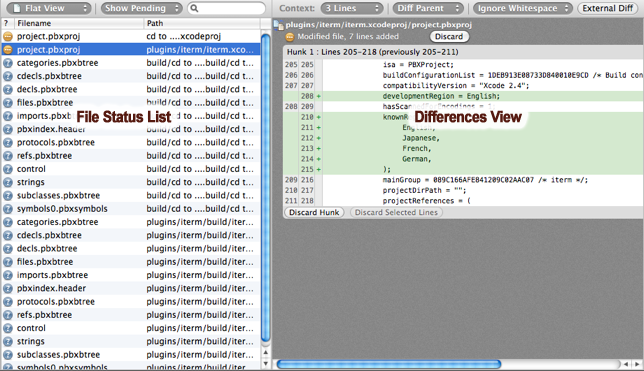
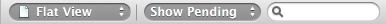

Repository Window: File status
The default view in the repository window is the File Status View, which
shows you the status of your working copy.

The file status view has 2 main areas, the file list and differences view. On the left hand side, by default you're shown files in your working copy which have been modified in some way, although you can use the checkboxes at the bottom to filter the statuses that are displayed. Selecting one of these files will display those changes in the right hand differences pane.
The top bar

The bar along the top of the file list allows you to control aspects of the view.
File List View Type There are 3 ways for the file list to display its contents - the flat view, the tree view, and the 3-column view. You can switch between them using the view control at the top of the file list, shown on the far left of the bar. Which one you prefer depends on how many files you have modified and your own personal preferences; by default the flat view is used because it is the most compact.
Status filter Next on the bar is the status filter, which defaults to 'Show Pending', which means to display all files which you may wish to commit, such as modified, added, removed, or untracked files. You can select different options to display other files or combinations of files.
Search box If you have a lot of files in the view, you can type a search pattern into this box to quickly narrow down the results. The file list will filter dynamically as you type.
Git Staging
For Mercurial, or Git when the staging view is disabled in the Preferences, there is only one list of files on the left hand side. When you're looking at a Git repository and you have staging enabled, you the file list is split in two - the upper section lists changes which are staged in the index, and the lower section lists changes to local files which are not yet staged.
To stage files, you can select them in the lower section and click 'Add', or you can drag & drop them from the lower to the upper section (and vice versa). You can also stage/unstage parts of the file by using the buttons in the diff view on the right-hand side when a file is selected.
See also
The Toolbar
The Sidebar and Footer
The Log View
The Search View
Drafting a commit message
Repository Settings
Submodules and Subrepositories